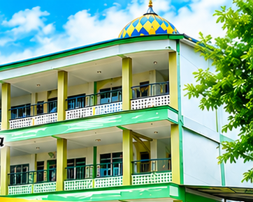
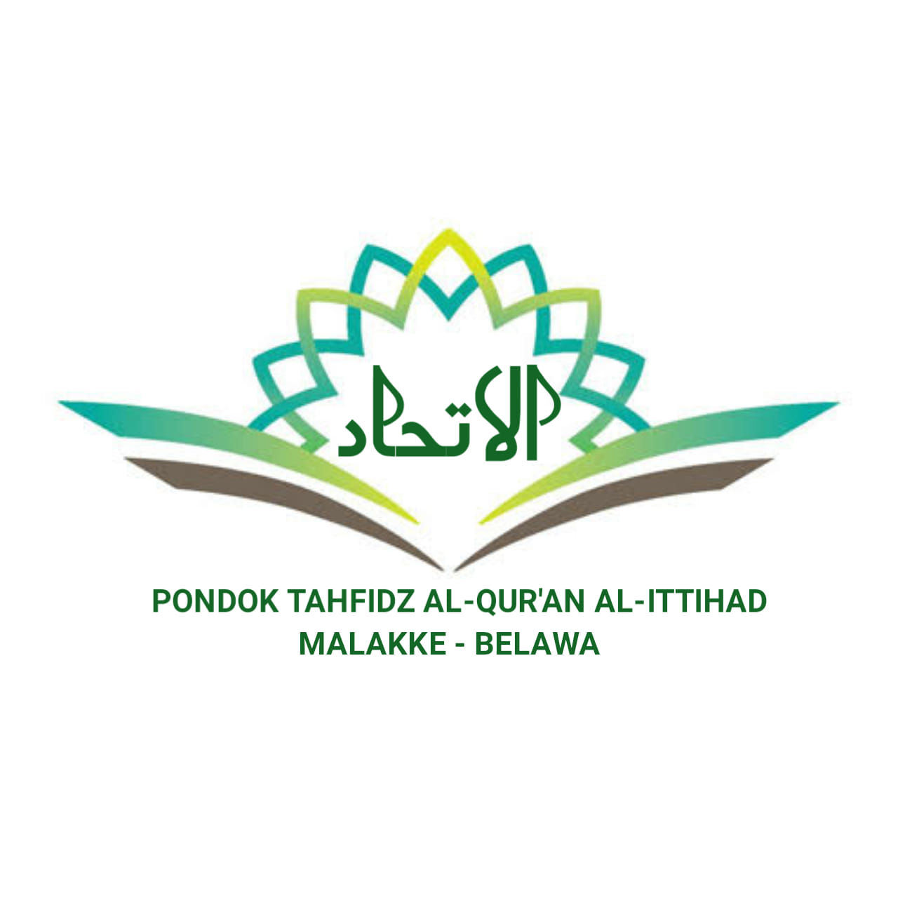

Membina Generasi Qur’ani, Berilmu, dan Berakhlak Mulia
WEBSITE RESMI PONDOK PESANTREN

Membina Generasi Qur’ani • Berilmu • Berakhlak Mulia
Hubungi KamiPPTQ Al-Ittihad Malakke merupakan lembaga pendidikan Islam yang berlokasi di Malakke, Kecamatan Belawa, Kabupaten Wajo, Provinsi Sulawesi Selatan.
Pesantren ini berkomitmen membina generasi Qur’ani melalui pendidikan tahfizh Al-Qur’an, pembinaan ilmu keislaman, penguatan ibadah, dan pembentukan akhlak mulia.
Muhammad Sabir Alimuddin, S.HI., M.Pd.
Membina generasi Qur’ani yang berilmu dan berakhlak mulia.
Menyelenggarakan pendidikan tahfizh Al-Qur’an dan pembinaan keislaman.
Membentuk santri yang disiplin, mandiri, berilmu, dan berakhlak mulia.
Pembinaan hafalan Al-Qur’an secara terarah dan berkesinambungan.
Pembelajaran ilmu tafsir, hadis, fikih, tauhid, dan ilmu keislaman lainnya.
Pembiasaan ibadah, adab, kedisiplinan, dan akhlak Islami.
Mari bergabung bersama keluarga besar PPTQ Al-Ittihad Malakke. Untuk mendapatkan informasi persyaratan dan pendaftaran santri baru, silakan menghubungi pengelola pesantren.
PPTQ Al-Ittihad Malakke
Malakke, Kecamatan Belawa, Kabupaten Wajo,
Sulawesi Selatan, Indonesia
WhatsApp: 0811 4610 910
Chat WhatsApp Sekarang